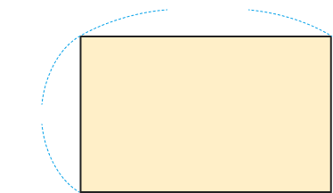
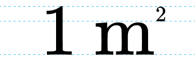
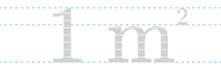
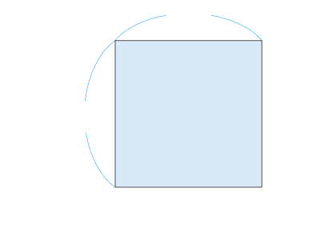

거실 바닥의 넓이는 몇 ㎠인지 구해 보세요.

800 ㎝
500 ㎝
거실 바닥의 넓이를 ㎠로 나타낼 때 불편한 점을 이야기해 보세요.
800 ㎝
500 ㎝
수가 커져서 넓이를 쉽게 쓰거나 읽기 어렵습니다.
1 ㎠보다 더 큰 넓이의 단위를 어떻게 나타내면 좋을지 이야기해 보세요.
800 ㎝
500 ㎝
1 ㎝보다 더 큰 길이의 단위로 1 m가 있으므로 1 ㎠보다 더 큰 넓이의 단위로 1 ㎡를 사용하면 좋을 것 같습니다.
넓이의 단위로 한 변의 길이가 1 m인 정사각형의 넓이를 사용할 수 있습니다.
한 변의 길이가 1 m인 정사각형의 넓이를
라 쓰고,
라고 읽습니다.



1 m
1 m
1 ㎡
그리기 도구

꼭지점